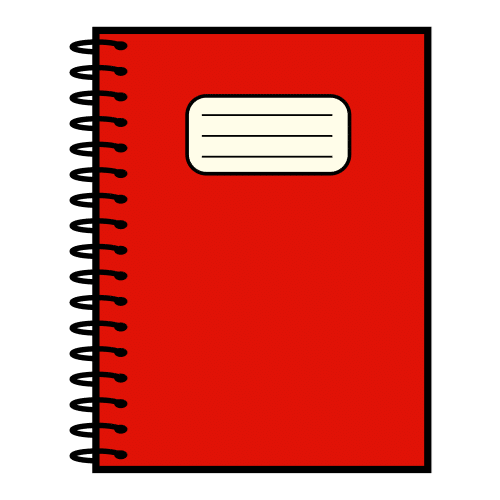

4.3. Las horas del reloj

1. Las horas del día
Como ya sabes, la tierra gira alrededor del sol, pero a la vez, también está girando sobre sí misma (como si fuese una peonza). La tierra tarda un día entero en dar una vuelta completa. Un día dura 24 horas. Fíjate bien:

Aunque parezca raro, el día empieza a las 12 de la noche (cuando estás durmiendo). Dura toda la noche y todo el día siguiente (hasta las 12 de la noche otra vez, cuando ya comienza otro día).
Fíjate en esta línea. Tiene todas las horas del día.

VAMOS A APRENDER LAS HORAS CON ESTE VIDEO
Lectura facilitada
La tierra gira alrededor del sol.
 La Tierra gira sobre sí misma.
La Tierra gira sobre sí misma.
La tierra tarda un día en dar una vuelta.
Un día tiene 24 horas.
El día empieza a las 12 de la noche.
El día acaba a las 12 de la noche siguiente.
Audio
2. Reloj robot

Un reloj también puede ser divertido y si a la vez es un robot aún más y si además es nuestro compañero Retor genial. Te proponemos su construcción en papel.
Colorea a tu gusto, decora, recorta y construye el robot.
Encontrarás la plantilla en la actividad 13 de la página 17 de tu Cuaderno del Tiempo.
Lectura facilitada
Construye un reloj divertido en papel.
El reloj es un robot.
 El reloj representa a Rétor.
El reloj representa a Rétor.
Tienes una plantilla
en el Cuaderno del Tiempo.
Abre el Cuaderno en la página 17.
Decora y construye el robot.
Clavis dice Estás aprendiendo muchas cosas sobre el tiempo: el año, los meses, los días, las horas, los relojes, ...
Estás aprendiendo muchas cosas sobre el tiempo: el año, los meses, los días, las horas, los relojes,...
CONSEJOS:
- Entender las explicaciones.
- Estar atento y atenta.
- Preguntar si no entiendes algo.
- Usar la memoria y recordar la información.
- Usar las cosas que he aprendido para responder a preguntas, resolver problemas o inventar cosas.
¿Te ha resultado difícil hacer alguna de estas cosas?
No te preocupes, poco a poco lo irás consiguiendo.
Lectura facilitada
Aprendes muchas cosas sobre el tiempo.
¿Usas los consejos que te enseñé?
- Entiende la explicación.
- Presta atención.
- Pregunta tus dudas.
- Recuerda la información.
- Usa lo que aprendes.
¿Es difícil hacer estas cosas?
No te preocupes,
pronto lo consigues.
Lumen dice El orden de las horas
Has aprendido que el día tiene 24 horas, cada hora tiene 60 minutos cada minuto 60 segundos.
Kardia dice La importancia del reloj
Ahora ya comprendes lo importante que es saber la hora para organizar tus actividades diarias y para respetar los horarios.
Obra publicada con Licencia Creative Commons Reconocimiento No comercial Compartir igual 4.0